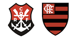
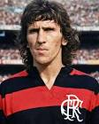
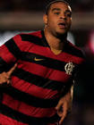
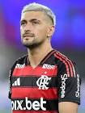
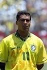
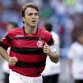

Arthur Antunes Coimbra, o Zico (Rio de Janeiro, 3 de março de 1953), é um dos maiores futebolistas da história, ídolo máximo do Flamengo e lenda da Seleção BrasileiraZico (Rio de Janeiro, 3 de março de 1953), é um dos maiores futebolistas da história, ídolo máximo do Flamengo e lenda da Seleção Brasileira. Conhecido como "Galinho de Quintino", foi um meia-atacante brilhante, artilheiro histórico do Flamengo (509 gols) e mestre das cobranças de falta, destacando-se pela técnica refinada e visão de jogo nas décadas de 1970 e 1980. Principais Feitos e Carreira: Flamengo (Ídolo Máximo): Liderou o clube na conquista da Libertadores e do Mundial Intercontinental de 1981, além dos Brasileiros de 1980, 1982, 1983 e 1987. Seleção Brasileira: Disputou três Copas do Mundo (1978, 1982, 1986), sendo o craque da inesquecível equipe de 1982. Artilharia e Números: Terceiro maior artilheiro da seleção brasileira (67 gols) e recordista de gols de falta na história do futebol (101 gols). Passagem pelo Japão: Foi fundamental na fundação da J-League e ídolo no Kashima Antlers, onde jogou e treinou, ajudando a popularizar o futebol no país. Treinador e Gestor: Comandou seleções como Japão e Iraque, além de clubes como Fenerbahçe, e atuou como diretor no Flamengo. Nascido em Quintino, no Rio de Janeiro, Zico superou um físico franzino na infância com treinamento intenso, chegando ao Flamengo em 1966. Após encerrar a carreira, tornou-se comentarista e fundou o CFZ.

A história de Adriano Imperador é a trajetória do atacante brasileiro Adriano Leite Ribeiro, nascido no Rio de Janeiro, que ascendeu da Vila Cruzeiro ao estrelato mundial, famoso por sua força física e chutes potentes, brilhando no Flamengo, Inter de Milão e na Seleção Brasileira, mas cuja carreira declinou devido a problemas pessoais, especialmente após a morte de seu pai, culminando em um retorno triunfal no Brasil e aposentadoria. Início e Ascensão: Origens: Começou no futsal e nas categorias de base do Flamengo, onde logo se destacou. Profissional: Estreou no profissional em 2000 pelo Flamengo, marcando um gol em sua estreia, e foi rapidamente para a Europa. Europa: Contratado pela Inter de Milão em 2001, teve passagens por Fiorentina e Parma, onde consolidou seu estilo e ganhou o apelido de "Imperador". Este vídeo mostra a infância de Adriano no Rio de Janeiro: https://www.youtube.com/watch?v=Fu48uAjrKRE Auge na Seleção e Inter: Liderança: Liderou o Brasil na conquista da Copa América de 2004 e da Copa das Confederações de 2005, sendo artilheiro em ambas. Ídolo: Tornou-se uma figura icônica na Inter de Milão, conquistando diversos títulos e sendo um dos melhores atacantes do mundo. Declínio e Retorno: Luta Pessoal: A carreira foi afetada pela morte de seu pai em 2004, levando a depressão, problemas com álcool e inconsistência em campo. Volta ao Brasil: Retornou ao Brasil, conquistando o Brasileirão com o Flamengo (2009) e o Corinthians (2011). Aposentadoria: Aposentou-se em 2016, aos 34 anos, após uma carreira meteórica e complexa.

Giorgian De Arrascaeta é um talentoso meia uruguaio, nascido em Nuevo Berlín, que começou nas categorias de base do Defensor Sporting antes de brilhar no Brasil pelo Cruzeiro e, mais tarde, no Flamengo, onde se tornou ídolo e um dos maiores jogadores estrangeiros da história do clube, conhecido por sua técnica, visão de jogo e gols decisivosGiorgian De Arrascaeta é um talentoso meia uruguaio, nascido em Nuevo Berlín, que começou nas categorias de base do Defensor Sporting antes de brilhar no Brasil pelo Cruzeiro e, mais tarde, no Flamengo, onde se tornou ídolo e um dos maiores jogadores estrangeiros da história do clube, conhecido por sua técnica, visão de jogo e gols decisivos. Origem e início de carreira Nasceu em Nuevo Berlín, Uruguai, uma cidade pequena onde cresceu e mantém fortes laços, retornando nas férias. Começou a jogar futebol aos 4 anos no Pescadores Unidos, de sua cidade natal, e seu nome é uma homenagem a um cavalo de corrida do pai. Destacou-se nas categorias de base do Defensor Sporting, chamando atenção de clubes maiores. Trajetória no Brasil Cruzeiro (2015-2018): Chegou ao Brasil em 2015, tornando-se peça fundamental e conquistando duas Copas do Brasil, participando de gols decisivos, como na vitória contra o Corinthians. Flamengo (2019-presente): Transferiu-se para o Flamengo em uma negociação histórica, tornando-se um dos maiores ídolos e jogadores mais vitoriosos do clube. Destaques no Flamengo: É considerado um dos maiores camisas 10 pós-Zico, o estrangeiro com mais gols e títulos na história do clube, sendo decisivo em finais de Libertadores e Brasileirão, com técnica, drible e visão de jogo.

Romário de Souza Faria (Rio de Janeiro, 29 de janeiro de 1966) é um político, empresário e ex-futebolista brasileiro/ Romário chegou ao Flamengo em 1995 com o status de melhor jogador do mundo. Com uma média impressionante de 0,85 gols por partida, o "Baixinho" marcou 204 gols pelo clube, conquistando dois Campeonatos Cariocas (1996 e 1999) e a Copa Mercosul (1999). É o quarto maior artilheiro da história rubro-negra. A carreira de Romário no Flamengo foi marcada por um impacto midiático estrondoso, muitos gols e uma relação intensa de "amor e ódio" com a torcida e a diretoria. Ele chegou ao clube em 1995, logo após ser eleito o melhor jogador do mundo e conquistar o tetra com a Seleção Brasileira.O "Melhor Ataque do Mundo" (1995) Para celebrar o centenário do clube, o Flamengo montou o badalado ataque com Sávio, Romário e Edmundo. Apesar da enorme expectativa, o trio não rendeu o esperado em termos de títulos, perdendo o Campeonato Carioca de 1995 para o Fluminense (o famoso gol de barriga de Renato Gaúcho).
Nascido em Belo Horizonte, Bruno veio de uma família humilde e começou a jogar futebol aos 9 anos de idade nos campos de várzea, junto com seu irmão mais velho, Juninho. Tentou fazer um teste na base do Valeriodoce EC, clube de Itabira, mas não deu certo. Sem ter ido para categorias de base de nenhum clube na juventude, Bruno conciliava a carreira no futebol amador com os estudos e trabalhos informais. Em 22 de janeiro, o jogador chegou ao Rio de Janeiro para assinar um contrato de três anos com o Flamengo, que desembolsou mais de 23 milhões de reais mais o empréstimo do volante Jean Lucas por um ano. Em sua chegada, o atacante disse estar feliz pelo acerto e, quanto à expectativa no novo clube, foi mais breve ainda: "Títulos". Estreou contra Botafogo, o Clássico da Rivalidade, no dia 26 de janeiro, pela 3ª rodada da Taça Guanabara, tendo uma atuação de gala, entrando no segundo tempo, e marcando os dois gols da vitória rubro-negra por 2–1.Um atacante nascido em Belo Horizonte, vindo de uma família humilde, começou a jogar futebol aos 9 anos em campos de várzea ao lado do irmão mais velho. Tentou ingressar em um clube de base, mas não conseguiu, seguindo no futebol amador enquanto conciliava estudos e trabalhos informais. Anos depois, foi contratado por um grande clube do Rio de Janeiro em um acordo milionário de três anos. Logo na estreia em um clássico, saiu do banco e marcou dois gols na vitória do time. Repetiu o feito em outros clássicos estaduais e foi decisivo na final do campeonato, tornando-se o primeiro jogador do clube a marcar dois gols contra cada um dos três principais rivais no mesmo ano. Terminou o torneio como artilheiro e, pelo destaque na temporada, recebeu convocação para a seleção nacional. Também brilhou no campeonato nacional, participando diretamente de quatro gols em uma goleada sobre um rival, e na competição continental marcou dois gols nas quartas de final e deu uma assistência importante que ajudou a equipe a avançar após décadas sem chegar tão longe.

A passagem de Dejan Petkovic pelo Flamengo foi marcada por talento, gols decisivos e forte identificação com a torcida, tornando-se um dos maiores ídolos estrangeiros do clube. Pet chegou ao Flamengo em 2000, conquistando rapidamente espaço no time. Em 2001, viveu um dos momentos mais icônicos de sua carreira ao marcar, de falta, o gol do título carioca contra o Vasco, além de ser fundamental na conquista da Copa dos Campeões. Após encerrar a primeira passagem em 2002, retornou anos depois e foi peça importante na campanha do Campeonato Brasileiro de 2009, atuando como maestro da equipe campeã. No total, o meia sérvio disputou 198 jogos e marcou 57 gols pelo Rubro-Negro, muitos deles em cobranças de falta — sua principal marca registrada. Também conquistou dois Campeonatos Cariocas (2000 e 2001), a Copa dos Campeões (2001) e o Brasileirão (2009). Resumo: Petkovic ficou conhecido pelos gols decisivos, especialmente em finais, e por liderar o time em momentos importantes. Sua técnica e identificação com a torcida o transformaram em um ídolo eterno do Flamengo.

Diego Ribas no Flamengo (2016–2022) foi a transição de uma estrela solitária para o líder de uma era vencedora: O Início (2016-2018): Chegou como o grande símbolo da reconstrução financeira do clube. Foi o protagonista técnico, mas sofreu com batidas na trave em títulos importantes. O Ápice (2019): Sofreu uma grave lesão, voltou em tempo recorde e deu a assistência para o gol do título da Libertadores contra o River Plate. A Transformação (2020-2022): Deixou o protagonismo técnico para trás, recuou de posição (tornando-se volante) e consolidou-se como o capitão e "líder espiritual" do vestiário. Legado: Aposentou-se com 12 títulos, sendo um dos jogadores mais vitoriosos da história do clube, e passou a mística camisa 10 para Gabigol. Basicamente, ele foi o "pilar" que uniu a fase de arrumação da casa com a fase das grandes glórias.